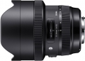
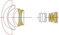

器材库 > 35mm画幅AF变焦镜头 / DG 12-24/4 HSM / Art > DG 12-24/4 HSM | Art

详细规格
镜头类型
超广角变焦镜头
发布日期
2016-09-20
焦距
12mm-24mm
最大光圈
f/4
最小光圈
f/22
视角（对角）
122.0° - 84.1°
镜头结构
16片/11组
光圈叶片
9片
最近对焦距离
24cm
最大放大倍率
1:4.9
驱动马达
HSM（超声波马达）
镜头卡口
Canon EF, Nikon F, Sigma SA
防抖
否
颜色
黑色
尺寸
102.0×131.5mm
重量
1150g
附件
镜头包
备注
卡口部分采用简易防尘防滴设计构造
该产品暂无存档的网友点评
产品图 / 样片
DG 12-24/4 HSM

DG 12-24/4 HSM
评测 / 相关文章
- 超广角生力军 适马12-24/4测评 （存档）
- ［资讯］DxOMark公布12-24/4 DG HSM A成绩 （存档）
- ［行情］适马12-24/4限时特价促销 （存档）
- ［试用］适马12-24/4镜头实拍样片 （存档）
- ［资讯］dpreview公布适马12-24/4Art测试结果 （存档）
- ［资讯］高性价比超广 DxO公布适马12-24Art成绩 （存档）
- ［资讯］适马12-24mm F4镜头高清图赏 （存档）
- ［行情］适马官方宣布12-24/4价格出炉 （存档）
- ［试用］值得期待 适马12-24/4海外上手体验 （存档）
- ［资讯］适马正式发布三款高性能镜头 （存档）